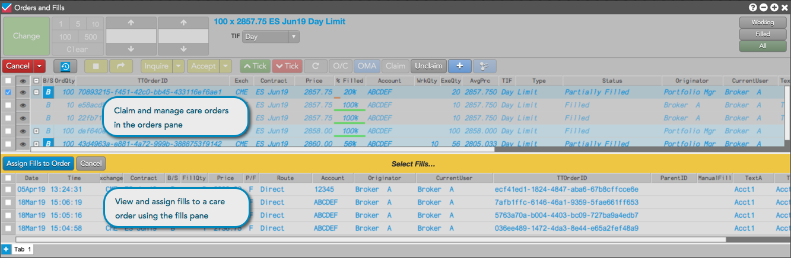

TT provides the ability to submit and manage care orders, which allow you to submit order intentions to another trader or trading desk for customized handling and execution. For example, a portfolio manager might need to buy a quantity of contracts sufficiently large that it would adversely affect the contract price. In such a case, the portfolio manager might want to create the initial care order, but give it to an execution trader or broker to work the order.
Care orders can be submitted from a FIX-enabled system such as a third-party order management system, from another user via a TT screen, or directly from the Order Ticket on your own TT screen. Care orders can specify the contract, price, quantity and buy/sell direction, or provide a fully qualified order specification including detailed order parameters. They can also include specific text instructions for the execution trader or broker to better understand your intentions for staging the order.
User's who share an account or have been assigned to the same account with order staging permissions enabled can view and manage care orders in their Order Book or orders pane of their Orders and Fills widget:

When describing care order functionality in this topic, the following terms are used: